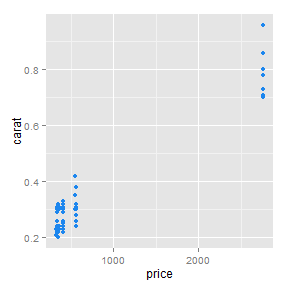
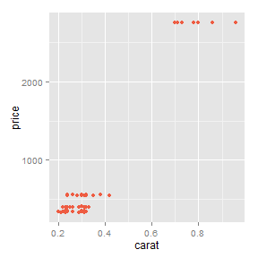

Honing our R skills & mindset
Some vaguely interesting programming problems in R
Presentation by Prof James Curley, Columbia University / @jalapic
This presentation
You may or may not be interested to know that this presentation is written in R. Slidify is an R package that compiles R-Markdown scripts into html slideshows. The conversion from R-Markdown to html is done via "frameworks." reveal.js is one such framework.
Matti Vuore and I are trying to put together some sample templates of Slidify to make it easier for others in the Psych department (and the world) to learn.
Thank You Matti

Idea behind this presentation
- get everyone thinking programatically and logically about problems
- begin to appreciate how quick*, useful and reproducible working with R can be
*relatively speaking - e.g. compared to excel, spss, stata
Format of the presentation
- Most examples are taken from stackoverflow - thank you to the community there for questions, answers and discussion.
- I present each problem up front with a question and a desired result.
- We will then spend a little while thinking about ways we might logically address the problem.
- I then provide some alternative solutions.
Problem 1:
How to find the number of identical elements in two vectors?
a <- letters[1:5]
b <- c('a','k','w','p','b','b')
a
#[1] a b c d e
b
#[1] a k w p b b
For each element of 'a', return how many are found in 'b'...
# desired result
# 1 2 0 0 0
Solution 1a - A fairly slow but intuitive approach
1. Use sapply to apply a function over each element of the vector in succession
2. That function is to sum all instances that are TRUE where that element is equal to each element of 'b'
a <- letters[1:5]
b <- c('a','k','w','p','b','b')
sapply(a, function(x) sum(x==b))
## a b c d e
## 1 2 0 0 0
# e.g.
a[1]==b
## [1] TRUE FALSE FALSE FALSE FALSE FALSE
Solution 1b - A fairly fast and intuitive approach
1. Make 'b' a factor comprised of the levels of 'a'
2. Use table to get frequency counts of each level
#2. (medium)
table(factor(b,levels=a))
##
## a b c d e
## 1 2 0 0 0
# This works because when factorizing 'b', NAs will be produced if not in 'a'
factor(b, levels=a)
## [1] a <NA> <NA> <NA> b b
## Levels: a b c d e
Solution 1c - The fastest
1. Use match to find index of 'a' that each 'b' is located
2. Use tabulate to get frequency counts of each index of 'a'
tabulate(match(b, a), length(a))
## [1] 1 2 0 0 0
a
## [1] "a" "b" "c" "d" "e"
b
## [1] "a" "k" "w" "p" "b" "b"
match(b,a)
## [1] 1 NA NA NA 2 2
# tabulate works as it tabulates the indexes
# using length(a) ensures that there is one count for each possible value.
Problem 2:
Count number of times a value has already been seen?
v <- c(1, 3, 1, 2, 4, 2, 1, 3)
# desired result
# 0 0 1 0 0 1 2 1
Solution 2a - base r approach
1. Use ave to group v by each unique element of 'v'
2. Use seq_along the function to obtain occurrence number of each element
3. Subtract one to get how many times each has already been seen
v <- c(1, 3, 1, 2, 4, 2, 1, 3)
ave(v, v, FUN=seq_along)-1
## [1] 0 0 1 0 0 1 2 1
#can you see how it works ?
seq_along(v)
## [1] 1 2 3 4 5 6 7 8
Solution 2b - dplyr approach
1. Those that use dplyr regularly may be logically more comfortable using group_by.
2. Using mutate adds a new variable to each observation, which by using row_number is the successive instance of each in this case.
3. Subtract one to get how many times each has already been seen rather than the exact occurence
library(dplyr)
data.frame(v) %>% group_by(v) %>% mutate(count = row_number()-1)
## Source: local data frame [8 x 2]
## Groups: v
##
## v count
## 1 1 0
## 2 3 0
## 3 1 1
## 4 2 0
## 5 4 0
## 6 2 1
## 7 1 2
## 8 3 1
Solution 2c - not recommended but interesting
The make.unique function does what you think in a very useful way for our purpose, and then we use regular expressions to get rid of the element indexes that we don't need.
v.u <- make.unique(as.character(v)) # it only works on character vectors so you must convert first
v.u
## [1] "1" "3" "1.1" "2" "4" "2.1" "1.2" "3.1"
as.integer(sub("^$","0",sub("[0-9]+\\.?","",v.u)))
## [1] 0 0 1 0 0 1 2 1
#these might help explain...
sub("[0-9]+\\.?","",v.u)
## [1] "" "" "1" "" "" "1" "2" "1"
tmp <- sub("[0-9]+\\.?","",v.u)
sub("^$","0", tmp)
## [1] "0" "0" "1" "0" "0" "1" "2" "1"
Problem 3:
Find the indices of last occurrence of the unique elements in a vector
q <- scan(text="1 2 1 2 1 1 1 3 1 2 2 3 3 3 1 1 1 4 1 1 1 4 1 5 5 6
6 2 3 3 4 4 2 2 2 2 2 3 3 3 1 4 4 4 3 2 5 5 5 5")
# desired result
# 41 46 45 44 50 27
Solution 3a - non duplicated values
Use duplicated to identify whether an element is duplicated. The fromLast checks for duplicated values from the end of the vector. All duplicated values return TRUE, the first instance returns FALSE.
The ! actually checks for the inverse - i.e. not duplicated, and then which can be used to identify the position of the element. The result then needs to be ordered according to its alphanumeric position
q <- scan(text="1 2 1 2 1 1 1 3 1 2 2 3 3 3 1 1 1 4 1 1 1 4 1 5 5 6
6 2 3 3 4 4 2 2 2 2 2 3 3 3 1 4 4 4 3 2 5 5 5 5")
i <- which(!duplicated(q,fromLast=T))
i[order(q[i])]
## [1] 41 46 45 44 50 27
Solution 3a - non duplicated values
Further explanation:
q <- scan(text="1 2 1 2 1 1 1 3 1 2 2 3 3 3 1 1 1 4 1 1 1 4 1 5 5 6
6 2 3 3 4 4 2 2 2 2 2 3 3 3 1 4 4 4 3 2 5 5 5 5")
duplicated(q)
## [1] FALSE FALSE TRUE TRUE TRUE TRUE TRUE FALSE TRUE TRUE TRUE
## [12] TRUE TRUE TRUE TRUE TRUE TRUE FALSE TRUE TRUE TRUE TRUE
## [23] TRUE FALSE TRUE FALSE TRUE TRUE TRUE TRUE TRUE TRUE TRUE
## [34] TRUE TRUE TRUE TRUE TRUE TRUE TRUE TRUE TRUE TRUE TRUE
## [45] TRUE TRUE TRUE TRUE TRUE TRUE
duplicated(q, fromLast=T)
## [1] TRUE TRUE TRUE TRUE TRUE TRUE TRUE TRUE TRUE TRUE TRUE
## [12] TRUE TRUE TRUE TRUE TRUE TRUE TRUE TRUE TRUE TRUE TRUE
## [23] TRUE TRUE TRUE TRUE FALSE TRUE TRUE TRUE TRUE TRUE TRUE
## [34] TRUE TRUE TRUE TRUE TRUE TRUE TRUE FALSE TRUE TRUE FALSE
## [45] FALSE FALSE TRUE TRUE TRUE FALSE
Solution 3a - non duplicated values
Further explanation:
q <- scan(text="1 2 1 2 1 1 1 3 1 2 2 3 3 3 1 1 1 4 1 1 1 4 1 5 5 6
6 2 3 3 4 4 2 2 2 2 2 3 3 3 1 4 4 4 3 2 5 5 5 5")
!duplicated(q, fromLast=T)
## [1] FALSE FALSE FALSE FALSE FALSE FALSE FALSE FALSE FALSE FALSE FALSE
## [12] FALSE FALSE FALSE FALSE FALSE FALSE FALSE FALSE FALSE FALSE FALSE
## [23] FALSE FALSE FALSE FALSE TRUE FALSE FALSE FALSE FALSE FALSE FALSE
## [34] FALSE FALSE FALSE FALSE FALSE FALSE FALSE TRUE FALSE FALSE TRUE
## [45] TRUE TRUE FALSE FALSE FALSE TRUE
which(!duplicated(q, fromLast=T)) #this isn't ordered yet
## [1] 27 41 44 45 46 50
Solution 3a - non duplicated values
Further explanation:
q <- scan(text="1 2 1 2 1 1 1 3 1 2 2 3 3 3 1 1 1 4 1 1 1 4 1 5 5 6
6 2 3 3 4 4 2 2 2 2 2 3 3 3 1 4 4 4 3 2 5 5 5 5")
which(!duplicated(q, fromLast=T))
## [1] 27 41 44 45 46 50
i <- which(!duplicated(q,fromLast=T))
i[order(q[i])]
## [1] 41 46 45 44 50 27
Solution 3b - tapply
Use tapply to apply a function max over each unique value of the vector 'q', returning the corresponding value from the first argument, which in this case are the numbers 1 to 50 that come from seq_along(q).
With tapply the first argument must be the same length as the input vector
q <- scan(text="1 2 1 2 1 1 1 3 1 2 2 3 3 3 1 1 1 4 1 1 1 4 1 5 5 6
6 2 3 3 4 4 2 2 2 2 2 3 3 3 1 4 4 4 3 2 5 5 5 5")
tapply(seq_along(q), q, max)
## 1 2 3 4 5 6
## 41 46 45 44 50 27
Solution 3c - security blanket dplyr approach
1. Turn the vector into a dataframe with one variable being the vector 'q' and the other variable being the row number.
2. Then use group_by to perform a function on each unique level of 'q' which is to return the max row with summarize
q <- scan(text="1 2 1 2 1 1 1 3 1 2 2 3 3 3 1 1 1 4 1 1 1 4 1 5 5 6
6 2 3 3 4 4 2 2 2 2 2 3 3 3 1 4 4 4 3 2 5 5 5 5")
library(dplyr)
data.frame(q, row=1:length(q)) %>% group_by(q) %>% summarize(max(row))
## Source: local data frame [6 x 2]
##
## q max(row)
## 1 1 41
## 2 2 46
## 3 3 45
## 4 4 44
## 5 5 50
## 6 6 27
Problem 4:
Remove observations with obvious typos
Here is a dataframe called Pat_File. All observations should have the same Sex and Age. When they do not and are obvious typos they need to be excluded from the dataframe. Imagine the dataframe has thousands of rows.
Pat_File
## Case_ID Pat_ID Sex Age
## 1 1 1 1 33
## 2 2 1 1 33
## 3 3 1 1 33
## 4 4 1 1 76
## 5 5 2 2 19
## 6 6 2 2 19
## 7 7 2 1 49
## 8 8 3 1 15
Solution 4a - identify the modal value
1. A straightforward method would be to identify the mode of each Case_ID and filter those observations for each case that do not possess the modal value. Sadly this function doesn't exist in R.
2. But we can make one ...
Mode <- function(x) { as.numeric(names(sort(-table(x)))[1])}
x <- c(3,6,4,2,4,6,4,2,4,5,7,4,3,2,1)
Mode(x)
## [1] 4
Solution 4a - cont.
Here we filter using dplyr and our recently constructed Mode function:
#dplyr way:
Pat_File %>% group_by(Pat_ID) %>% filter(Age==Mode(Age) & Sex==Mode(Sex))
## Source: local data frame [6 x 4]
## Groups: Pat_ID
##
## Case_ID Pat_ID Sex Age
## 1 1 1 1 33
## 2 2 1 1 33
## 3 3 1 1 33
## 4 5 2 2 19
## 5 6 2 2 19
## 6 8 3 1 15
Solution 4a - cont.
As an FYI, this can be done very quickly indeed in the data.table package. I don't plan to go through the syntax today!:
#data.table way:
library(data.table)
setDT(Pat_File)[, .SD[Age==Mode(Age) & Sex==Mode(Sex)] , by=Pat_ID]
## Pat_ID Case_ID Sex Age
## 1: 1 1 1 33
## 2: 1 2 1 33
## 3: 1 3 1 33
## 4: 2 5 2 19
## 5: 2 6 2 19
## 6: 3 8 1 15
Problem 5:
Finding the index of first changes in the elements of a vector
k <- c(1, 1, 1, 1, 1, 1, 1, 1.5, 1.5, 2, 2, 2, 2, 2, 1, 1, 1, 2, 2, 2)
# desired result
# 1 8 10 15 18
Solution 5a - use diff.
Here we can use diff to calculate the difference between each successive element of the vector 'k'. We can then find where these are not equal to 0 using which. We have to add one to each result to get the index of the original vector, as well as combine with '1' to represent the first element of the vector.
c(1,1+which(diff(k)!=0))
## [1] 1 8 10 15 18
diff(k) #note one fewer results than input values
## [1] 0.0 0.0 0.0 0.0 0.0 0.0 0.5 0.0 0.5 0.0 0.0 0.0 0.0 -1.0
## [15] 0.0 0.0 1.0 0.0 0.0
which(diff(k)!=0)
## [1] 7 9 14 17
Problem 6:
Count the number of negative values at the end of a vector
200 120 80 7 -12 -20 15 70 85 -12 -19 -43
# desired result
# 3
145 321 213 187 87 78 -23 -43 12 -35 21
# desired result
# 0
Solution 6a - count sign changes from end
The great function rle calculates runs of identical sequences. By putting sign in front of the vector, it will count the runs of positive and negative numbers (represented by -1s and +1s). Then using indexing, find the last result from rle and return that if the last run was negative, or zero if it wasn't.
j1 <- scan(text="200 120 80 7 -12 -20 15 70 85 -12 -19 -43")
j2 <- scan(text="145 321 213 187 87 78 -23 -43 12 -35 21")
r <- rle(sign(j1))
n <- length(r$values)
ifelse(r$values[n] < 1, r$lengths[n], 0)
## [1] 3
r <- rle(sign(j2))
n <- length(r$values)
ifelse(r$values[n] < 1, r$lengths[n], 0)
## [1] 0
Solution 6a - count sign changes from end
Further explanation:
j1 <- scan(text="200 120 80 7 -12 -20 15 70 85 -12 -19 -43")
sign(j1)
## [1] 1 1 1 1 -1 -1 1 1 1 -1 -1 -1
rle(sign(j1))
## Run Length Encoding
## lengths: int [1:4] 4 2 3 3
## values : num [1:4] 1 -1 1 -1
r <- rle(sign(j1))
n <- length(r$values)
n
## [1] 4
ifelse(r$values[n] < 1, r$lengths[n], 0)
## [1] 3
Problem 7:
How to turn a number into a Roman numeral?
yrs <- c(2014, 2015, 2016)
# desired result
# MMXIV MMXV MMXVI
Solution 7a - sorry - trick question
There's already a function for it! It's called as.roman .
yrs <- c(2014, 2015, 2016)
as.roman(yrs) #cool
## [1] MMXIV MMXV MMXVI
In case you're curious about slidify
These are some of the options...
HTML
With a little bit of HTML, we can do all sorts of things.
- roll-in
- fade-in
- highlight-red
- highlight-green
- highlight-blue
Mathjax
\(p(\theta|D) = \frac{p(D|\theta) p(\theta)}{p(D)}\)
Text side by side
<div class="twocol">
Images side by side
We can put two images side by side using css in /assets/css/...

R plots side by side
Or by using a slide template saved as templatename.html in /assets/layouts/


This is better for plots generated in R. Using grid.arrange() would probably be best for these.
Keyboard shortcuts
- Press escape to zoom out, and alt+click to zoom in
- b for blackout
- f for fullscreen
- s to show slide notes